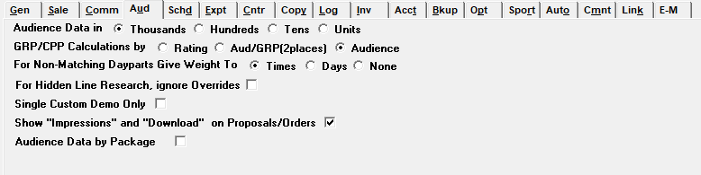

Audience

Audience Data in Thousands, Hundreds, Tens or Units: Determines the units in which you will view Audience data. “Thousands” would show 45,000 as 45, “Hundreds” would show it as 450, “Tens” would show it as 4500, and “Units” would show 45,000.
GRP/CPP Calculations By Rating, Aud/GRP (2 places) or Audience: This is the method the Demo Bar will use to calculate audience information if using the Proposal System. This is typically set to Audience. If set to Audience, an additional field will appear in the Agency setup screen labeled “1 or 2 place rating”. This field allows the user to specify whether the research rating should be computed to one or two decimal places.
For Non-Matching Dayparts Give Weight to Times, Days or None: This will allow you to define when a schedule line has day and time overrides, what is considered more important when getting the research figures for this line.
- If Times is chosen, it will use the override times to find the research daypart that most closely matches the times.
- If Days is chosen, the best-fit research daypart whose days most closely match the days ordered will be used.
For Hidden Line Research, ignore Overrides: This will allow you to define if the hidden lines should use their own daypart or override information when computing research numbers.
- When activated, any hidden lines that have overrides will not use the override daypart when determining research. The Hidden lines will use their ordered daypart resulting in a larger audience for the package calculations. When this feature is checked on, you must also define the Research Override Comment in the Site Options Comment Tab.
- When deactivated, any hidden lines will use their override daypart when determining the research .
Single Custom Demo Only: This changes the look of the Research Screen and allows only one custom demo to be entered with a mandatory sort code of 1.
Show “Impressions” and “Download” on Proposals/Orders: If not checked, any demo categories defined in the contract header will be shown in the demo field on the Proposals/Contracts and Insertion Orders report. If checked on, the toggle “Show Impressions” will appear in the Demo field in the Proposal/Order header area. When this toggle is set to “Yes”, the word “Impressions” will appear in the Demos box on the Proposals/Contracts and Insertion Orders reports, and when printing the contract, on the Proposals/Contracts report, the contract snapshot report, and the Insertion Orders report, where the column header “avg aud” (average audience) is normally shown, it will show the word “download” instead of “avg aud”. When the Show Impressions toggle is set to “No”, the defined demo categories will be shown in the Demos box on the Proposals/Contracts and Insertion Orders reports.